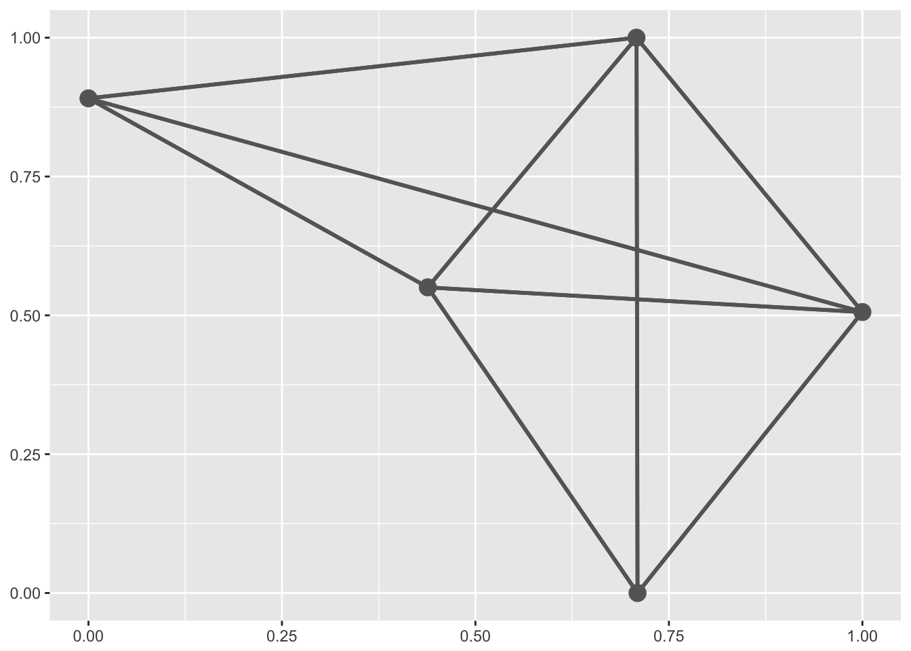
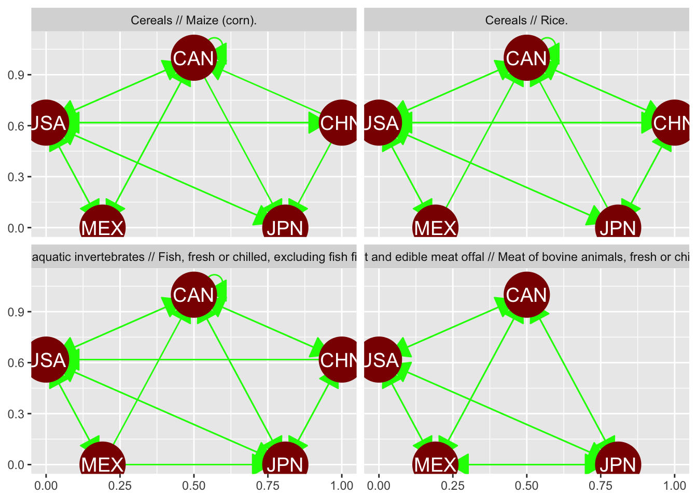
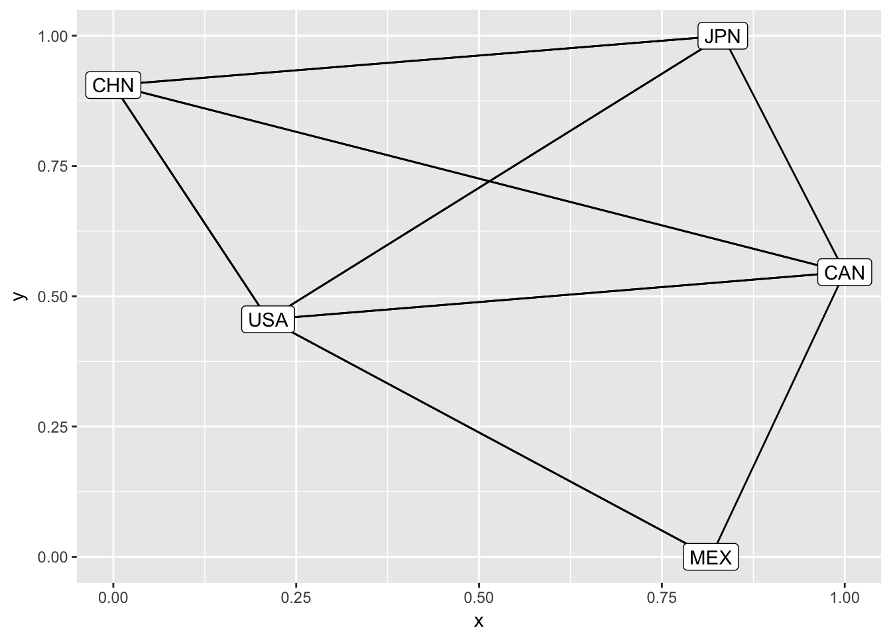
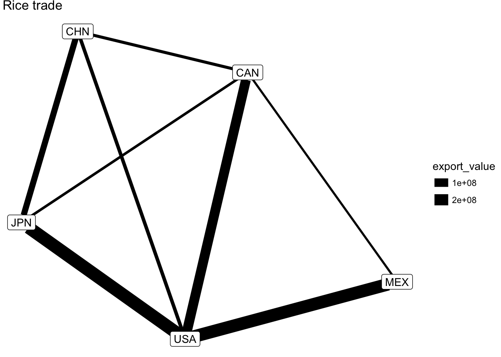
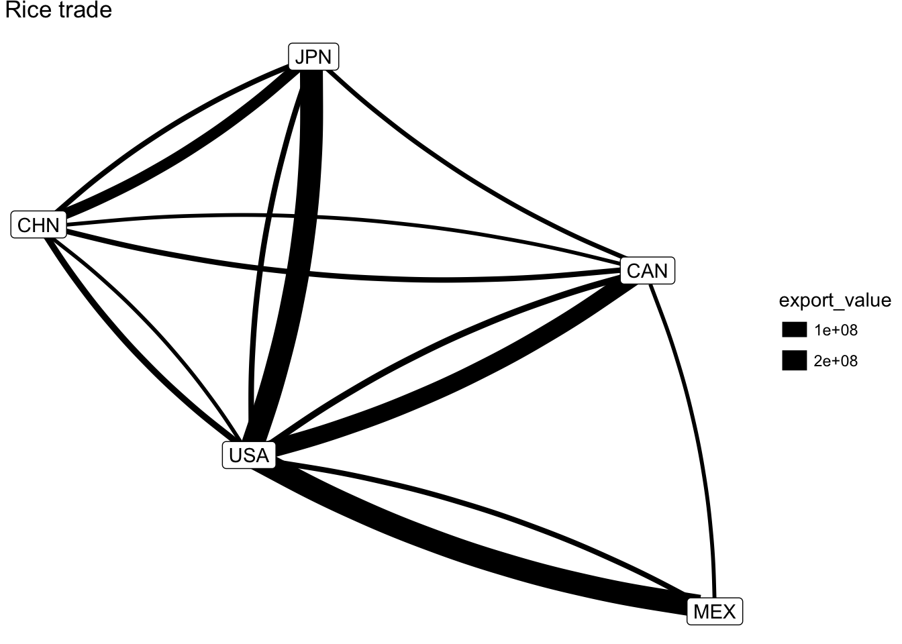
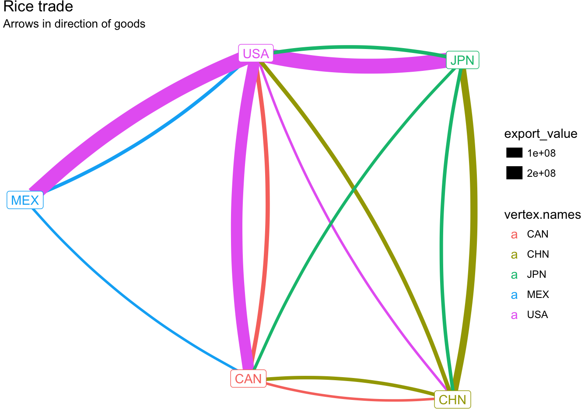
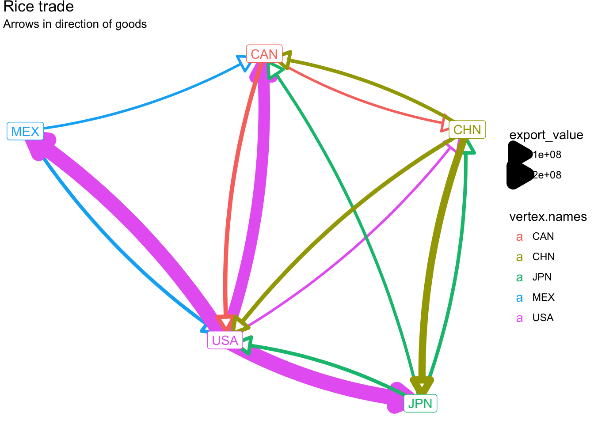
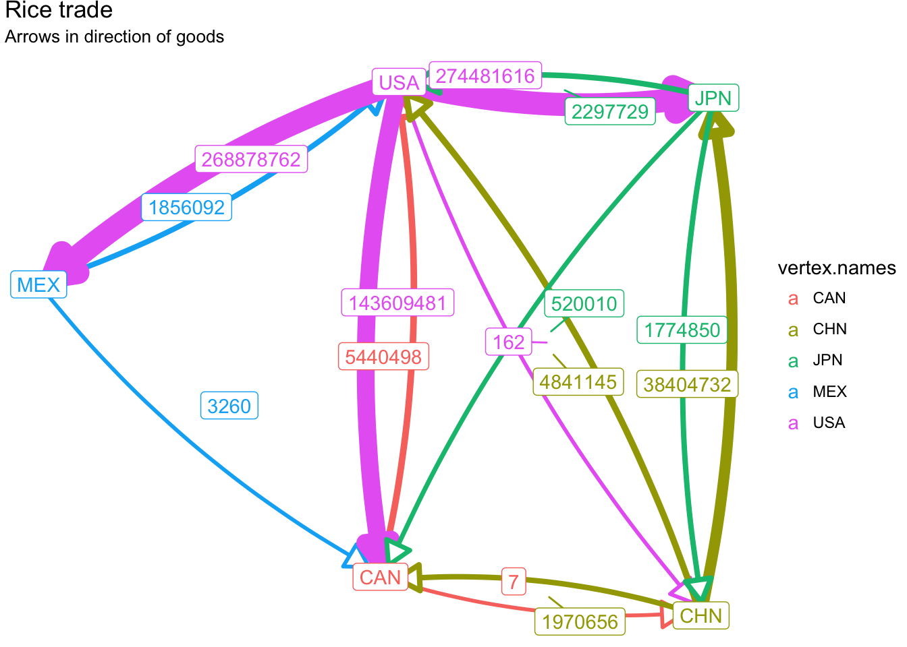
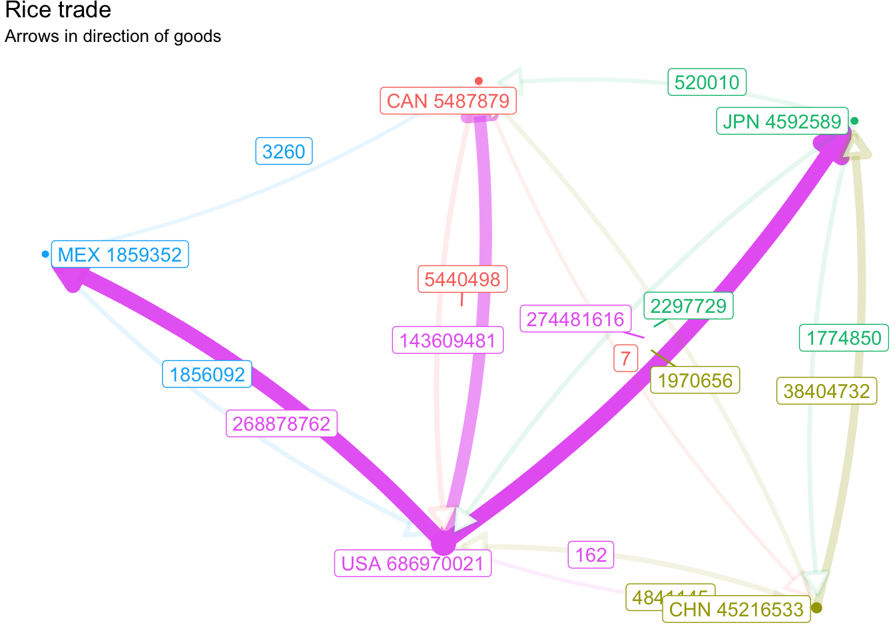

Lecture 13 Networks
This lecture uses the following packages:
tidyverse
geomnet
ggnetwork
network13.1 Data
The basic data requirements for creating a network diagram is a listing of the edges. Each edge observation should designate the two vertices it connects. In this lecture we will look at international trade flows. Each edge will represent the amount of trade flowing between two countries.
13.1.1 UN Comtrade Database
The UN Comtrade Database houses detailed global trade data.
- Under “Type of product & Frequency” select Goods and Annual
- Under “Classification” select HS 12
- Under “Select desired data” change Trade flows to Import, for Reporters and Partners add the following countries
- USA
- Canada
- Mexico
- China
- Japan
and change the HS2012 commodity codes list to include the following
- 1006 - Rice
- 1005 - Maize (corn)
- 0201 - Meat of bovine animals; fresh or chilled
- 0302 - Fish; fresh or chilled, excluding fish fillets and other fish meat of heading 0304
Next click on “Download CSV”.
library(tidyverse)
comtrade <- read_csv("data/comtrade.csv")
comtrade## # A tibble: 57 x 35
## Classification Year Period `Period Desc.` `Aggregate Level`
## <chr> <int> <int> <int> <int>
## 1 H4 2016 2016 2016 4
## 2 H4 2016 2016 2016 4
## 3 H4 2016 2016 2016 4
## 4 H4 2016 2016 2016 4
## 5 H4 2016 2016 2016 4
## 6 H4 2016 2016 2016 4
## 7 H4 2016 2016 2016 4
## 8 H4 2016 2016 2016 4
## 9 H4 2016 2016 2016 4
## 10 H4 2016 2016 2016 4
## # ... with 47 more rows, and 30 more variables: `Is Leaf Code` <int>,
## # `Trade Flow Code` <int>, `Trade Flow` <chr>, `Reporter Code` <int>,
## # Reporter <chr>, `Reporter ISO` <chr>, `Partner Code` <int>,
## # Partner <chr>, `Partner ISO` <chr>, `2nd Partner Code` <chr>, `2nd
## # Partner` <chr>, `2nd Partner ISO` <chr>, `Customs Proc. Code` <chr>,
## # Customs <chr>, `Mode of Transport Code` <chr>, `Mode of
## # Transport` <chr>, `Commodity Code` <chr>, Commodity <chr>, `Qty Unit
## # Code` <int>, `Qty Unit` <chr>, Qty <chr>, `Alt Qty Unit Code` <chr>,
## # `Alt Qty Unit` <dbl>, `Alt Qty` <chr>, `Netweight (kg)` <dbl>, `Gross
## # weight (kg)` <chr>, `Trade Value (US$)` <dbl>, `CIF Trade Value
## # (US$)` <chr>, `FOB Trade Value (US$)` <chr>, Flag <int>13.2 Geomnet
install.packages('geomnet')The basic requirements for using geom_net() are to identify the vertex columns labelled from_id and to_id.
library(geomnet)
trade_plot <- ggplot(comtrade, aes(from_id = `Partner ISO`, to_id = `Reporter ISO`))
trade_plot +
geom_net()
We can use facet_wrap() to facet by Commodity. There are a bunch of other features of geom_net, so the next figure shows many
trade_plot +
geom_net(colour = "darkred", labelon = TRUE,
size = 15, directed = TRUE, vjust = 0.5, labelcolour = "white",
arrowsize = 1.5, linewidth = 0.5, arrowgap = 0.05,
selfloops = TRUE, ecolour = "green") +
facet_wrap(~ `Commodity`)
13.3 ggnetwork
Up to now, we have not used the information of the amount/value of trade flowing through this network. The ggnetwork package gives us a little more control over the display of the network diagram.
install.packages("ggnetwork")Let’s create a network data obect with only the rice commodity.
library(ggnetwork)
library(network)
rice_trade <- comtrade[grepl("rice", comtrade$Commodity, ignore.case = TRUE),]
rice_net <- network::network(rice_trade[, c("Partner ISO", "Reporter ISO")], directed = TRUE)
set.edge.attribute(rice_net, "export_value", rice_trade$`Trade Value (US$)`)
ggplot(rice_net, aes(x, y, xend = xend, yend = yend)) +
geom_edges() +
geom_nodelabel(aes(label = vertex.names))
Lets add some information by varying the thickness of the edges based on the value of trade.
ggplot(rice_net, aes(x, y, xend = xend, yend = yend)) +
geom_edges(aes(size = export_value)) +
geom_nodelabel(aes(label = vertex.names)) +
labs(title="Rice trade") +
theme_void()
We can improve this further by adding curvature to the edges, since right now the rice heading to Mexico from the USA is ovelapping the rice heading to the USA from Mexico.
ggplot(rice_net, aes(x, y, xend = xend, yend = yend)) +
geom_edges(aes(size = export_value), curvature = 0.1) +
geom_nodelabel(aes(label = vertex.names)) +
labs(title="Rice trade") +
theme_void()
Let’s color each edge by the origin of the goods flowing along it. That is, the edge that represents goods moving from the USA to Mexico will be reported as an import by Mexico with the USA as the partner. We initialized our network by setting Partner ISO as the from_id. So to associate the flow of trade with the origin country, we will want to set the color of the edge the same as the corresponding origin vertex.
ggplot(rice_net, aes(x, y, xend = xend, yend = yend)) +
geom_edges(
aes(size = export_value, color = vertex.names),
curvature = 0.1
) +
geom_nodes(aes(color = vertex.names)) +
geom_nodelabel(aes(label = vertex.names, color = vertex.names)) +
labs(title="Rice trade", subtitle="Arrows in direction of goods") +
theme_void()
We can also add arrows to clarify the direction of the flow of goods.
ggplot(rice_net, aes(x, y, xend = xend, yend = yend)) +
geom_edges(
aes(size = export_value, color = vertex.names),
arrow = arrow(length = unit(1, "lines"), type = "closed"),
curvature = 0.1
) +
geom_nodes(aes(color = vertex.names)) +
geom_nodelabel(aes(label = vertex.names, color = vertex.names)) +
labs(title="Rice trade", subtitle="Arrows in direction of goods") +
theme_void()
Finally, we can also label the edges.
ggplot(rice_net, aes(x, y, xend = xend, yend = yend)) +
geom_edges(
aes(size = export_value, color = vertex.names),
arrow = arrow(length = unit(1, "lines"), type = "closed"),
curvature = 0.1, show.legend = FALSE
) +
geom_edgelabel_repel(aes(label = export_value, color = vertex.names)) +
geom_nodelabel(aes(label = vertex.names, color = vertex.names)) +
labs(title="Rice trade", subtitle="Arrows in direction of goods") +
theme_void()
13.4 Node/Vertex Summary
Let’s encode the total amount exported from a country (the partners in our data). It’s important here to not use the same attribute name that we used earlier.
vertex_summary <- rice_trade %>%
group_by(`Partner ISO`) %>%
summarize(value = sum(`Trade Value (US$)`))
set.vertex.attribute(
rice_net,
"values",
vertex_summary$value
)Let’s encode the sum of export values in the size of each node.
ggplot(rice_net, aes(x, y, xend = xend, yend = yend)) +
geom_edges(
aes(size = export_value, alpha = export_value, color = vertex.names),
arrow = arrow(length = unit(1, "lines"), type = "closed"),
curvature = 0.1, show.legend = FALSE
) +
geom_edgelabel_repel(aes(label = export_value, color = vertex.names), show.legend = FALSE) +
geom_nodelabel_repel(aes(label = paste(vertex.names, values), color = vertex.names), show.legend = FALSE) +
geom_nodes(aes(size = values, color = vertex.names), show.legend = FALSE) +
labs(title="Rice trade", subtitle="Arrows in direction of goods") +
theme_void()
13.5 Assignment
13.5.1 Download a new dataset
Download new data from comtrade. Replace two of the countries we have used with two of your choosing. Remeber that the list of partner and reporter countries must match. Choose a different commodity use a 2 or 4 digit commodity code to increase the chances of trade between your selected countries. Make sure to list the countries you used and the commodity code so I can download your data (you may also submit your CSV with your Rmd).
13.5.2 Create a visualization
Your network visualization must use the ggnetwork package and display the country codes, the traded values, and have a meaningful title.